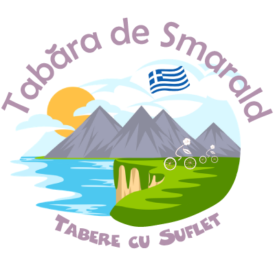

/ Tabere Vara / Tabara din Thassos
/ Tabere Vara / Tabara din Thassos

"Insula Thassos - numita si Insula de Smarald - este un vis plin de frumusete, iar cei care iubesc Muntele, Marea, Misterul si Aventura se vor simti aici ca in paradis!"
Cand mergem? 22 - 27 iunie 2024
Unde? Thassos, Grecia
Vom sta la Golden Beach, o statiune superba situata la poalele Vf. Ipsarion (1204 m) si, in acelasi timp, langa o plaja cu nisip fin, intinsa pe km!
Ce facem?
Ne vom bucura de munte de de mare si vom descoperi cele mai frumoase locuri ale insulei din saua bicicletei! La aceasta tabara pot participa atat copiii cat si adultii, asa ca traseele sunt adaptate varstei si nivelului participantilor. Se merge pe drumuri de pamant, alei de bicicleta sau poteci ce serpuiesc pe carari de munte si pe faleze suspendate deasupra Marii Egee. Traseele cele mai usoare au 10 - 15 km si o diferenta de nivel de 100 m, iar cele mai provocatoare au peste 30 km si trec de 1000 m diferenta de nivel.
Detalii tabara
Ce vizitam?
Vom descoperi o multime de lucruri minunate, intr-un peisaj mediteranean plin de frumusete: Cetati antice, Plaje spectaculoase, Cascade racoroase, Sate ascunse printre stanci, Cariere de Marmura si multe altele!
Iata cateva obiective pe care le-am vizitat de-a lungul timpului:
- Porto Vathy, vechiul drum catre Plaja de Marmura
Mai multe detalii »
- Kastro, Theologos, Cascada Apostolilor
Mai multe detalii »
- Plaja Metalia
Mai multe detalii »
- Varful Profiti Ilias, Cheile de Marmura
Mai multe detalii »
- Limenas, Cetatea de pe Acropole, Templul lui Artemis, Agora, Teatrul Roman, Templul zeitei Athena, Grota lui Pan
Mai multe detalii »
- Giola, Aliki
Mai multe detalii »
- Cheile Nestos, Lacul Vistonida, Cetatea Anastasiopolis, Via Egnathia, Zidul lui Anastasios
Mai multe detalii »
Daca vreti sa revedeti pozele din anii trecuti: 2017 | 2019 | 2023
Nivel recomandat: Traseele nu sunt foarte dificile, insa fiind zona muntoasa, exista o diferenta de nivel, de aceea este recomandam o anumita conditie fizica, putina determinare, precum si o bicicleta echipata corespunzator.
Varsta recomandata: Sunt bineveniti copii de 9 - 18 ani, sau chiar mai mari:) In aceasta tabara primim si adulti!
Cat costa? Contributia pentru aceasta tabara este de 280 Euro.
Ce asiguram? 3 nopti de cazare cu mic dejun, gustare on bike, ghidaj, masina asistenta si, cel mai important, peisaje minunate, multa voie buna si amintiri de neuitat:)
Oferte: Membrii Asociatiei pot beneficia de mai multe Oferte si Oportunitati. Mai multe detalii
Spre exemplu la aceasta tabara, in cazul unei plati cu 4 luni inainte de inceperea taberei se ofera o reducere de 10% prin programul Early Booking EB10
Servicii suplimentare: Pentru cei care vor sa vina cu noi, cu microbuzul, oferim transport, inclusiv pentru bicicleta, in limita locurilor disponibile in microbuz. Costul este de 100 Euro / pers. Toate taxele sunt incluse, inclusiv biletul de ferryboat, vinieta BG sau taxele de pod.
In cazul in care vreti sa veniti cu noi, va rugam sa ne spuneti cat de repede, deoarece locurile in microbuz sunt limitate!
Cum rezerv? Rezervarea devine ferma dupa plata unui avans de 50% in lei.
Termenul pentru plata avansului este cu 90 zile inainte de inceperea taberei, iar plata se poate face cash sau in Contul Asociatiei.
In cazul in care se depaseste termenul de plata, exista posibilitatea ca pretul sa creasca din cauza costurilor de modificare a cazarii.
La detalii plata va rugam sa treceti "Contract Sponsorizare", iar dupa ce faceti plata va rugam sa ne confirmati printr-un simplu email.
Contractul se gaseste aici. Pentru validarea inscrierii, va rugam sa il completati si sa ni-l transmiteti.
Sa ne cunoastem: Tabere cu Suflet este o Familie extinsa, in care impartasim aceleasi Valori. Ne-ar face placere sa facem cunostinta inainte de tabara si sa va povestim despre aceste Valori:)
In plus, Tabara nu poate avea loc fara Incredere, de aceea este important sa ne cunoastem si sa construim impreuna Puntea Increderii. Pentru a facilita acest lucru am creat mai multe oportunitati. Mai multe detalii
Asociatia Tabere cu Suflet: Aceasta tabara este deschisa exclusiv pentru membrii Asociatiei Tabere cu Suflet.
Daca nu sunteti membru si doriti sa deveniti, va rugam sa consultati Conditiile de Aderare, apoi sa completati Formularul de Inscriere si sa semnati Cererea de Adeziune.
WeCare: Prin achitarea integrala a contributiei, puteti ajuta un copil fara posibilitati materiale sa vina gratuit in tabere, 10% din costul total al taberei fiind directionat catre programul WeCare Zambet pentru toti Copiii. Mai multe detalii